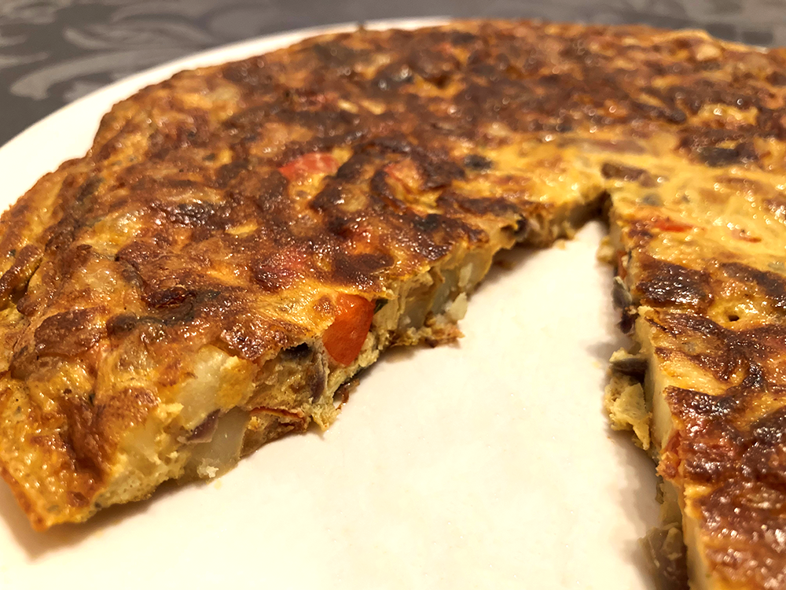

spaanse tortilla de patata
Dit gerecht is ook wel bekend als Spaans omelet. Er zijn meerdere variaties mogelijk, zoals met tomaat of paprika.

Bereidingsduur: 45 minuten
Aantal personen: 2
Instructies:
1. Snij de ui en eventuele andere groenten, fruit deze kort en leg apart. Snij de aardappels in heel kleine stukjes. Bak deze in 4/5 eetlepels olijfolie zachtjes een kwartier tot de aardappelschijfjes beetgaar zijn. Blijf regelmatig omscheppen.
2. Laat de aardappelstukjes afkoelen en haal de overtollige olie weg.
3. Pak een grote kom en klop hierin de eieren los met een beetje zout.
4. Voeg de aardappelstukjes en groenten toe aan de eieren, roer om en laat een minuutje rusten.
5. Verhit 1 eetlepel olijfolie in een koekenpan van 28 cm diameter.
6. Laat het mengsel in de pan glijden. Druk met de achterkant van een spatel de aardappelstukjes goed aan.
7. Houd de tortilla een minuut op middelhoog vuur en daarna op een laag vuur om door te garen.
8. Draai de tortilla om en zorg ervoor dat beide kanten goed gestold zijn en de binnenkant goed gaar is.
1. Snij de ui en eventuele andere groenten, fruit deze kort en leg apart. Snij de aardappels in heel kleine stukjes. Bak deze in 4/5 eetlepels olijfolie zachtjes een kwartier tot de aardappelschijfjes beetgaar zijn. Blijf regelmatig omscheppen.
2. Laat de aardappelstukjes afkoelen en haal de overtollige olie weg.
3. Pak een grote kom en klop hierin de eieren los met een beetje zout.
4. Voeg de aardappelstukjes en groenten toe aan de eieren, roer om en laat een minuutje rusten.
5. Verhit 1 eetlepel olijfolie in een koekenpan van 28 cm diameter.
6. Laat het mengsel in de pan glijden. Druk met de achterkant van een spatel de aardappelstukjes goed aan.
7. Houd de tortilla een minuut op middelhoog vuur en daarna op een laag vuur om door te garen.
8. Draai de tortilla om en zorg ervoor dat beide kanten goed gestold zijn en de binnenkant goed gaar is.